Session07 Covariance, Correlation, Simple Linear Regression
Goran S. Milovanovic, PhD

Covariance, Correlation, Simple Linear Regression
What do we want to do today?
Today, we begin laying the fundamental mathematical foundations for working in Data Science, which includes an introduction to probability theory. Probability theory is a branch of mathematics that deals with uncertain events—events that, as the name suggests, can occur only with some probability. But what does that mean? If something is uncertain, inherently unpredictable, is it even possible to describe it mathematically and treat it with the appropriate mathematical framework? The development of mathematics over the past three centuries, culminating in the 20th century, has shown that this is indeed possible. Probability theory is a mathematical discipline that connects the natural language we use to intuitively express ourselves about uncertain events with precise mathematical expressions. Through set theory, algebra, combinatorics, and mathematical analysis, it allows us to incorporate uncertain events into science and engineering.
The fundamental concepts we are introducing in this session are: event algebra, probability, random variables, distributions (discrete and continuous) of random variables, and the central limit theorem, whose significance in many empirical domains cannot be overstated.
What do we want to do today?
Correlations, correlations everywhere..! One would think that all that Data Scientists do nowadays is to look for them. Not even half true, however, they are of essential importance for our work. In this session, we introduce the concept of correlation, and expand it - in a gentle way - towards simple linear regression.
0. Prerequisits
Install:
# install.packages('corrplot')
# install.packages('Hmisc')
# install.packages('ppcor')
dataDir <- paste0(getwd(), "/_data/")Setup:
library(tidyverse)
library(Hmisc)
library(ppcor)
library(corrplot)1. Covariance, Variable Standardization, and Correlation
1.1 Linear relationships
We will start by inspecting two variables from the iris data set:
Sepal.Length and Petal.Length:
# - plot layout: 2 x 2
par(mfcol = c(2, 2))
# - boxplot iris$Sepal.Length
boxplot(iris$Sepal.Length,
horizontal = TRUE,
xlab = "Sepal Length")
# - histogram: iris$Sepal.Length
hist(iris$Sepal.Length,
main = "",
xlab = "Sepal.Length",
prob = T)
# - overlay iris$Sepal.Length density
# - function over the empirical distribution
lines(density(iris$Sepal.Length),
lty = "dashed",
lwd = 2.5,
col = "red")
# - boxplot iris$Petal.Length
boxplot(iris$Petal.Length,
horizontal = TRUE,
xlab = "Petal Length")
# - histogram: iris$Petal.Length,
hist(iris$Petal.Length,
main = "",
xlab = "Petal Length",
prob = T)
# - overlay iris$Petal.Length density
# - function over the empirical distribution
lines(density(iris$Petal.Length),
lty = "dashed",
lwd = 2.5,
col = "red")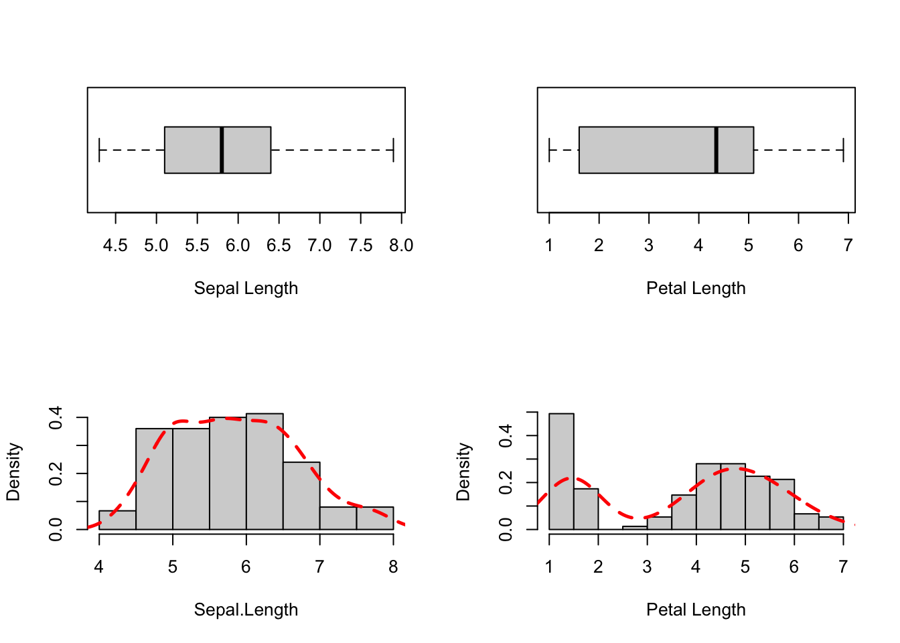
# reset plot layout
par(mfcol = c(1, 1))Q. Is there a linear relationship between these two variables? Let’s see:
# scatter plot w. {base}
plot(iris$Sepal.Length, iris$Petal.Length,
main = "Sepal Length vs Petal Length",
xlab = "Sepal Length", ylab = "Petal Length",
cex.main = .85,
cex.lab = .75)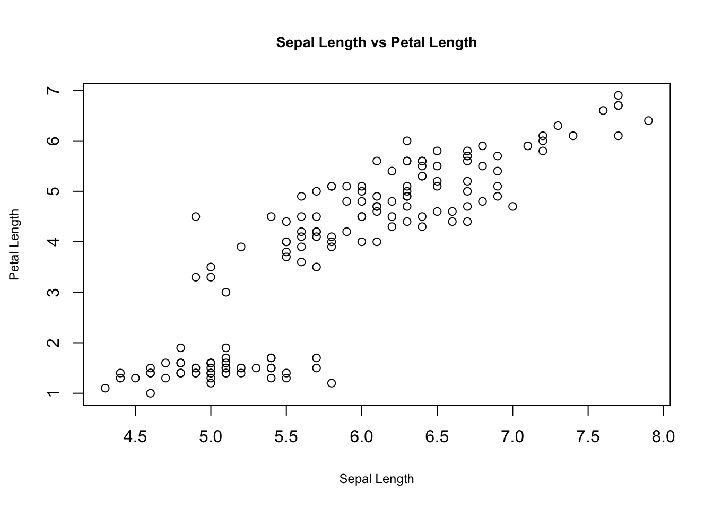
One could think there is something going on here. But:
ggplot(data = iris, aes(x = Sepal.Length,
y = Petal.Length,
color = Species)
) +
geom_point() +
geom_smooth(method = "lm", se = FALSE, linewidth = .25) +
theme_bw() +
theme(panel.border = element_blank())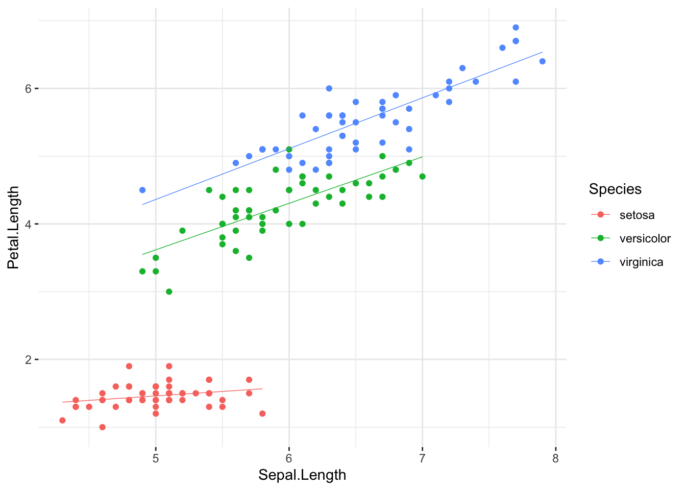
There seems to be more than one important line to describe this data set… However, we will simplify for now:
ggplot(data = iris, aes(x = Sepal.Length,
y = Petal.Length)) +
geom_point(color = "black", size = 2) +
geom_point(color = "white", size = 1.5) +
geom_smooth(method = lm, se = F, linewidth = .25, color = "red") +
theme_bw() +
theme(panel.border = element_blank())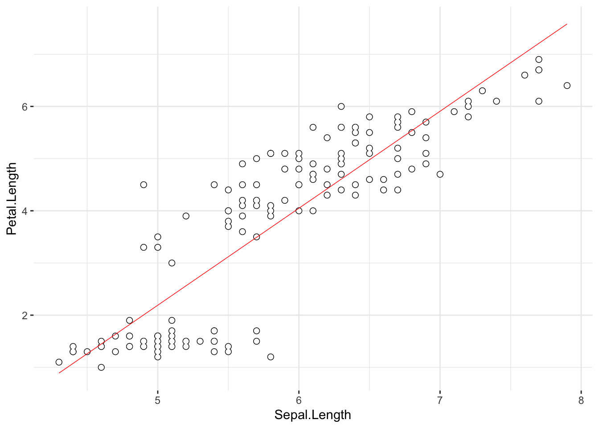
1.2 Covariance and Standardization
Leaving aside the important question of whether there is a linear
relationship between Sepal.Length and
Petal.Length in iris for now, we ask:
if it was a linear relationship, how good a linear
relationship would it make? The answer is provided by computing the
Pearson’s coefficient of linear correlation.
First things first. What is this:
cov(iris$Sepal.Length, iris$Petal.Length)## [1] 1.274315Covariance. Given two random variables (RVs), \(X\) and \(Y\), their (sample) covariance is given by:
\[cov(X,Y) = E[(X-E[X])(Y-E[Y])] = \frac{(X-\bar{X})(Y-\bar{Y})}{N-1}\] where \(E[]\) denotes the expectation (the mean, if you prefer), \(\bar{X}\) is the mean of \(X\), \(\bar{Y}\) is the mean of \(Y\), and \(N\) is the sample size.
1.3 Correlation
Pearson’s coefficient of correlation is nothing else than a covariance between \(X\) and \(Y\) upon their standardization. The standardization of a RV - widely known as a variable z-score - is obtained upon subtracting all of its values from the mean, and dividing by the standard deviation; for the i-th observation of \(X\):
\[z(x_i) = \frac{x_i-\bar{X}}{\sigma}\]
Thus,
zSepalLength <- (iris$Sepal.Length - mean(iris$Sepal.Length))/sd(iris$Sepal.Length)
zPetalLength <- (iris$Petal.Length - mean(iris$Petal.Length))/sd(iris$Petal.Length)
cov(zSepalLength, zPetalLength)## [1] 0.8717538is the correlation of Sepal.Length and
Petal.Length; let’s check with {base} R function
cor() which computes the correlation:
cor(iris$Sepal.Length, iris$Petal.Length,
method = "pearson")## [1] 0.8717538Right. There are many formulas that compute r, the
correlation coefficient; however, understanding that is simply the
covariance of standardized RVs is essential. Once you know to
standardize the variables and how to compute covariance (and that is
easy), you don’t need to care about expressions like:
\[r_{XY} = \frac{N\sum{XY}-(\sum{X})(\sum{Y})}{\sqrt{[N\sum{X^2}-(\sum{X})^2][N\sum{Y^2}-(\sum{Y})^2]}}\]
This and similar expressions are good, and especially for two
purposes: first, they will compute the desired value of the correlation
coefficient in the end, that’s for sure, and second, writing them up in
RMarkdown really helps mastering \(\LaTeX\). Besides these roles they play,
there is really nothing essentially important in relation to them.
Somewhat easier to remember:
\[r_{XY} = \frac{cov(X,Y)}{\sigma(X)\sigma(Y)}\] - the covariance of \(X\) and \(Y\), divided by the product of their standard deviations.
There’s a nice scale() function that will quicken-up the
computation of z-scores in R for you:
zSepalLength1 <- scale(iris$Sepal.Length, center = T, scale = T)
sum(zSepalLength1 == zSepalLength) == length(zSepalLength)## [1] FALSEDo ?scale - useful things can be done with it.
2. Correlation Matrices: Visualization and Treatment of Missing Values
The {base} cor() function produces correlation matrices
too:
cor(iris[ , c(1:4)])## Sepal.Length Sepal.Width Petal.Length Petal.Width
## Sepal.Length 1.0000000 -0.1175698 0.8717538 0.8179411
## Sepal.Width -0.1175698 1.0000000 -0.4284401 -0.3661259
## Petal.Length 0.8717538 -0.4284401 1.0000000 0.9628654
## Petal.Width 0.8179411 -0.3661259 0.9628654 1.0000000Missing data can be treated by listwise or pairwise
deletion. In listwise deletion, any observation (== row)
containing at least one NA(s) will be removed before the
computation. Set the use argument in cor to
complete.obs in order to use listwise deletion:
dSet <- iris
# Remove one nominal variable - Species
dSet$Species <- NULL
# introduce NA in dSet$Sepal.Length[5]
dSet$Sepal.Length[5] <- NA
# Pairwise and Listwise Deletion:
cor1a <- cor(dSet,
use = "complete.obs") # listwise deletion
cor1a## Sepal.Length Sepal.Width Petal.Length Petal.Width
## Sepal.Length 1.0000000 -0.1099640 0.8708659 0.8165243
## Sepal.Width -0.1099640 1.0000000 -0.4219569 -0.3590627
## Petal.Length 0.8708659 -0.4219569 1.0000000 0.9624228
## Petal.Width 0.8165243 -0.3590627 0.9624228 1.0000000Pairwise deletion will compute the correlation coefficient
using all available data. It will delete only the data corresponding to
the missing values from one vector in another, and compute the
correlation coefficient from what is left; set use to
pairwise.complete.obs to use this approach:
cor1b <- cor(dSet, use = "pairwise.complete.obs") # pairwise deletion
cor1b## Sepal.Length Sepal.Width Petal.Length Petal.Width
## Sepal.Length 1.0000000 -0.1099640 0.8708659 0.8165243
## Sepal.Width -0.1099640 1.0000000 -0.4284401 -0.3661259
## Petal.Length 0.8708659 -0.4284401 1.0000000 0.9628654
## Petal.Width 0.8165243 -0.3661259 0.9628654 1.0000000use = "all.obs" will produce an error in the presence of
any NAs:
cor1c <- cor(dSet,
use = "all.obs") # all observations - error## Error in cor(dSet, use = "all.obs"): missing observations in cov/corTo propagate NAs through the matrix wherever they are
present in the respective columns, use = "everything" (this
is the default; try cor(dSet)):
cor1d <- cor(dSet, use = "everything")
cor1d## Sepal.Length Sepal.Width Petal.Length Petal.Width
## Sepal.Length 1 NA NA NA
## Sepal.Width NA 1.0000000 -0.4284401 -0.3661259
## Petal.Length NA -0.4284401 1.0000000 0.9628654
## Petal.Width NA -0.3661259 0.9628654 1.0000000There are many available methods to visualize correlation matrices in
R. The {base} approach would be to use plot() on a
data.frame like in the following example:
# {base} approach
data("mtcars")
corMatrix <- cor(mtcars[ , 1:8])
plot(as.data.frame(corMatrix))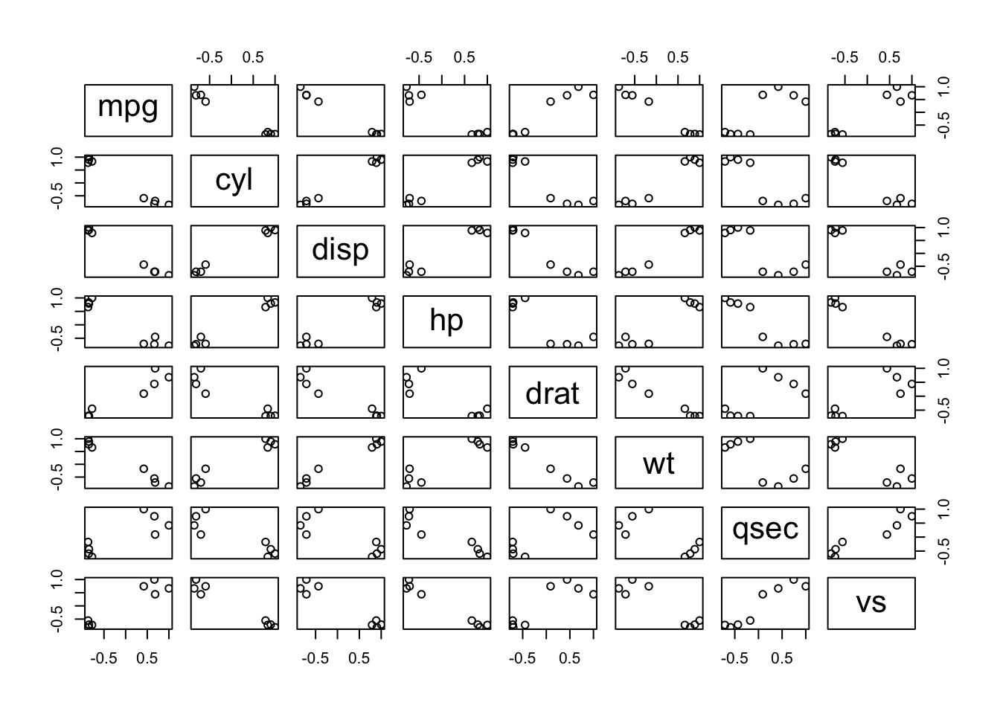
But there’s also the fantastic {corrplot} package to
visualize correlation matrices:
# {corrplot} approach
corMatrix <- cor(mtcars)# {corrplot} "circle" method:
corrplot(corMatrix,
method = "circle")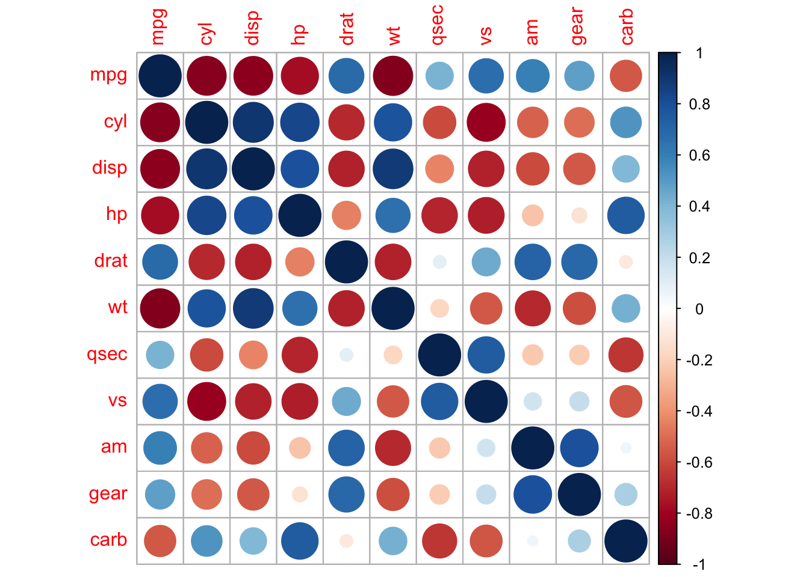
# {corrplot} "ellipse" method:
corrplot(corMatrix,
method = "ellipse")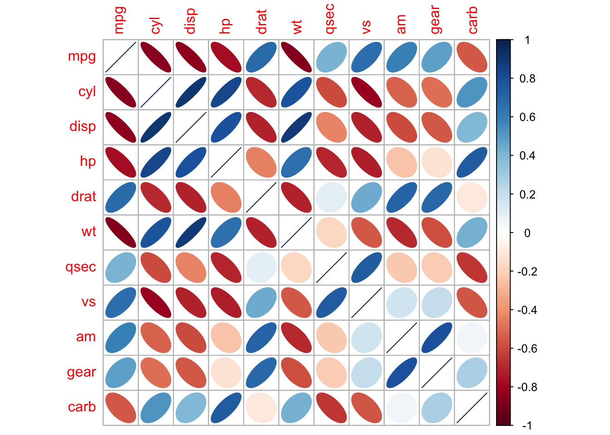
# "mixed"
corrplot.mixed(corMatrix,
lower = "ellipse",
upper = "circle")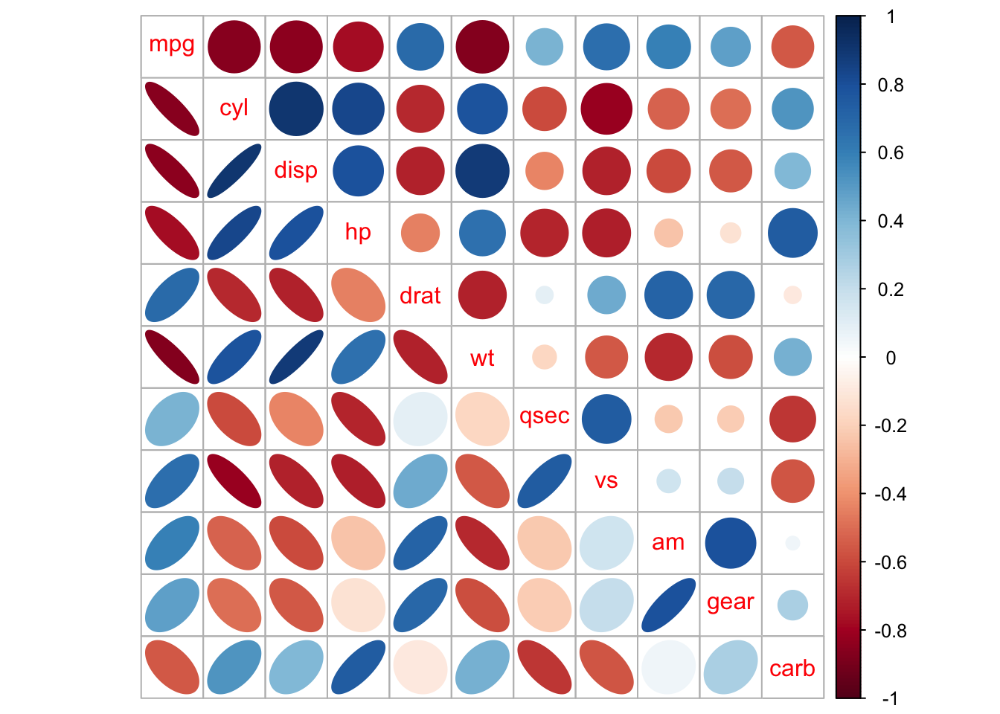
3. Introduction to Simple Linear Regression
We now begin considering the mathematical modeling of data in R. The first - and arguably the simplest - statistical model that we will face is the Simple Linear Regression Model. In a typical simple linear regression setting, we have one continuous predictor - also known as the independent variable - and one continuous criterion - a.k.a. the dependent variable. Both these are assumed to be unbounded, i.e. taking values across the whole domain of real numbers. Continuity here should be understood precisely as having measurements from an interval or ratio scale.
Linear regression does not imply any causality; it is up to the user of the model to impose causal assumptions, i.e. which variable takes the role of the criterion and which variable is assigned as a predictor. It is not even necessary to impose any such assumptions in order to obtain a valid linear regression model, although it is very customary to have some hypothesized direction of causality in order to discuss prediction meaningfully.
3.1 Linear Correlation, Assumption of Linearity, and Causality
## Pearson correlation in R {base}
cor1 <- cor(iris$Sepal.Length,
iris$Petal.Length,
method = "pearson")
cor1## [1] 0.8717538With \(R\) = .87 we hope to be able to say that there is a linear relationship, right? Time to learn something important about statistics: you can never rely on a conclusion that was reached by taking the values of the statistics prima facie while doing nothing else. Take a look at the scatter plot of these two variables again:
# Let's test the assumption of linearity:
ggplot(iris, aes(x = Sepal.Length, y = Petal.Length)) +
geom_point(size = 2, color = 'black') +
geom_point(size = 1.5, color = 'white') +
geom_smooth(method = 'lm', linewidth = .25, color = 'red', se = FALSE) +
ggtitle('Sepal Length vs Petal Length') +
theme_bw() +
theme(panel.border = element_blank())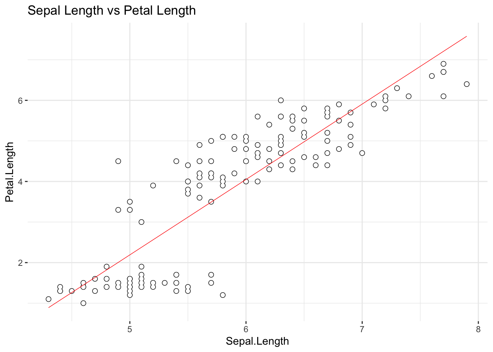
We have included the best fitting regression line in the scatter plot; does the relationship between the two variable really looks linear? Let’s remind ourselves of what we have already discovered:
ggplot(data = iris, aes(x = Sepal.Length,
y = Petal.Length,
color = Species)
) +
geom_point(size = 1.5) +
geom_smooth(method = 'lm', linewidth = .25, se = F) +
ggtitle('Sepal Length vs Petal Length') +
theme_bw() +
theme(panel.border = element_blank())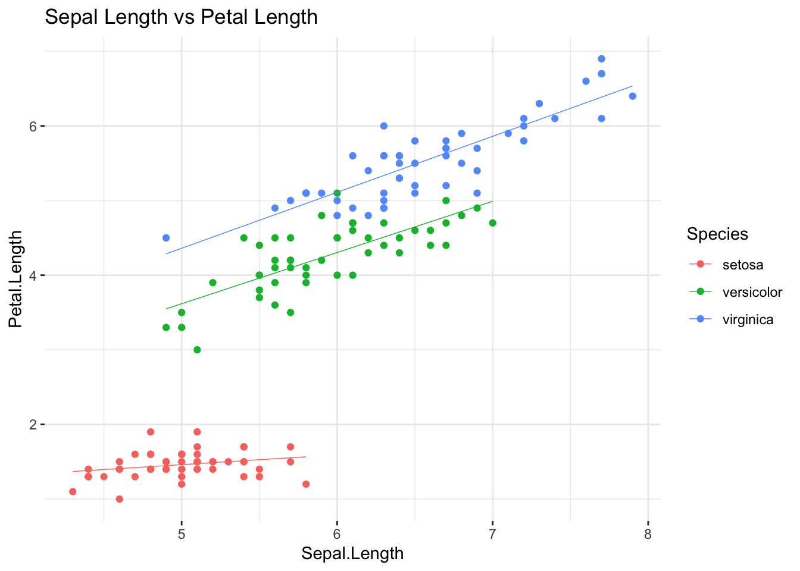
Interesting: there seem to be more than one linear
relationship in this scatter plot, i.e. one per each group from the
iris data set. What do we do, except for concluding that
the assumption of linearity has failed? We will introduce a fix
in one of our next sessions, showing how a multiple regression model can
account for situations like the present one; in the meantime, pretend
like nothing has happened…
By the way, is the \(R\) coefficient of linear correlation statistically significant?
# Is Pearson's correlation coefficient significant?
cor2 <- rcorr(iris$Sepal.Length, # {hmisc}
iris$Petal.Length,
type="pearson")
# correlations
cor2$r## x y
## x 1.0000000 0.8717538
## y 0.8717538 1.0000000cor2$r[1, 2] # Ok, the one we're looking for## [1] 0.8717538cor2$P[1, 2] # significant at## [1] 0Well, \(R\) is statistically
significant indeed. Most social science students would typically
conclude that everything’s superfine here… Don’t be lazy: (a) do the EDA
of your variables before modeling, (b) inspect the scatter plot in
smart ways - if there are natural groupings expected in the
data set, use colors or shapes to mark them. In spite of the high,
statistically significant Pearson’s correlation coefficient between
Sepal.Length and Petal.Length, this
relationship violates linearity, and a model more powerful than simple
linear regression is needed.
However, let’s pretend we’ve never seen this and start doing simple linear regression in R.
3.2 Simple Linear Regression: The Model
We will now consider the following statistical model of a linear relationship between two random variables:
\[Y = \beta_0 + \beta_1X_1 + \epsilon \]
- \(Y\) is the variable whose values we would like to be able to predict - and it is called a criterion or a dependent variable - from
- \(X\), which is called a predictor, or an independent variable in the Simple Linear Regression setting;
- \(\beta_0\) and \(\beta_1\) are model parameters, of which the former represents the intercept while the later is the slope of the regression line (note: besides \(\epsilon\), what the equation represents is nothing else but the equation of a straight line in a plane that you have seen a dozen times in high school); finally,
- \(\epsilon\) represents the model error term, which we will discuss in length in our Session.
If we assume that the relationship between \(X\) and \(Y\) is indeed linear - and introduce some additional assumptions that we will discuss in our next session - the following question remains:
What values of \(\beta_0\) and \(\beta_1\) would pick a line in a plane spawned by \(X\) and \(Y\) values so that it describes the assumed linear relationship between them the best?
Again:
# Let's test the assumption of linearity:
ggplot(iris, aes(x = Sepal.Length, y = Petal.Length)) +
geom_point(size = 2, color = 'black') +
geom_point(size = 1.5, color = 'white') +
geom_smooth(method = 'lm', linewidth = .25, color = 'red', se = F) +
ggtitle('Sepal Length vs Petal Length') +
theme_bw() +
theme(panel.border = element_blank())The line in this {ggplot2} scatter plot is the best
fitting line for the assumed linear relationship between
iris$Sepal.Length (taken to be a predictor, X-axis) and
iris$Petal.Length (taken to be a criterion, Y-axis).
{ggplot2} computed the best fitting line for us: how?
Well, in the end, it did it by selecting the optimal values for
\(\beta_0\) and \(\beta_1\). It is our task in this and the
following sessions to figure out how does that selection of optimal
parameter values takes place.
3.3 Simple Linear Regression w. lm() in R
In R we have the lm() function - short for linear
model - to fit all different kinds of models in the scope of this
model framework to the data:
### --- Linear Regression with lm()
# Predicting: Petal Length from Sepal Length
reg <- lm(Petal.Length ~ Sepal.Length,
data = iris)
class(reg)## [1] "lm"The Petal.Length ~ Sepal.Length is called a
formula, and you should learn more about how formulas in R are
syntactically composed. The simplest possible formula, like this one,
simply informs R that we wish to model Petal.Length -
standing to the left of ~ - by taking only
Sepal.Length - standing to the right - as a predictor. For
those who are already familiar with a multiple linear regression
setting, doing A ~ B + C means calling for a linear model
with A as a dependent variable and B,
C as predictors. We will let these things complicate in the
future, don’t worry. The object reg stores the results of
our attempt at a simple linear regression model, and has its own class
of lm, as you can observe following the call to
class(reg).
Let’s inspect the result more thoroughly:
summary(reg)##
## Call:
## lm(formula = Petal.Length ~ Sepal.Length, data = iris)
##
## Residuals:
## Min 1Q Median 3Q Max
## -2.47747 -0.59072 -0.00668 0.60484 2.49512
##
## Coefficients:
## Estimate Std. Error t value Pr(>|t|)
## (Intercept) -7.10144 0.50666 -14.02 <2e-16 ***
## Sepal.Length 1.85843 0.08586 21.65 <2e-16 ***
## ---
## Signif. codes: 0 '***' 0.001 '**' 0.01 '*' 0.05 '.' 0.1 ' ' 1
##
## Residual standard error: 0.8678 on 148 degrees of freedom
## Multiple R-squared: 0.76, Adjusted R-squared: 0.7583
## F-statistic: 468.6 on 1 and 148 DF, p-value: < 2.2e-16The output provides:
- a call that has generated the linear model object
reg; - a basic overview of descriptive statistics for model residuals;
- a table of regression coefficients: there are only two for the
simple linear regression model, namely the model intercept and the slope
(i.e. the regression coefficient for the one and only predictor in the
model), and the raw (not standardized) values of the predictors are
reported in the
Estimatecolumn, accompanied by respective standard errors, t-test against zero, and the probabilities of committing to a \(Type I\) error in drawing conclusions from these t-tests; - Residual Standard Error;
- Multiple \(R^2\) and the Adjusted \(R^2\) values;
- The \(F\) test: ratio of variances computed from the regression and residual SSEs, with the respective number of degrees of freedom and its p-value.
To isolate the regression coefficients from the model:
coefsReg <- coefficients(reg)
coefsReg## (Intercept) Sepal.Length
## -7.101443 1.858433slopeReg <- coefsReg[2]
print(paste0("Slope: ", slopeReg))## [1] "Slope: 1.85843297825484"interceptReg <- coefsReg[1]
print(paste0("Intercept: ", interceptReg))## [1] "Intercept: -7.10144336960245"You can also work with the summary() of the
lm class as an object:
sReg <- summary(reg)
str(sReg)## List of 11
## $ call : language lm(formula = Petal.Length ~ Sepal.Length, data = iris)
## $ terms :Classes 'terms', 'formula' language Petal.Length ~ Sepal.Length
## .. ..- attr(*, "variables")= language list(Petal.Length, Sepal.Length)
## .. ..- attr(*, "factors")= int [1:2, 1] 0 1
## .. .. ..- attr(*, "dimnames")=List of 2
## .. .. .. ..$ : chr [1:2] "Petal.Length" "Sepal.Length"
## .. .. .. ..$ : chr "Sepal.Length"
## .. ..- attr(*, "term.labels")= chr "Sepal.Length"
## .. ..- attr(*, "order")= int 1
## .. ..- attr(*, "intercept")= int 1
## .. ..- attr(*, "response")= int 1
## .. ..- attr(*, ".Environment")=<environment: R_GlobalEnv>
## .. ..- attr(*, "predvars")= language list(Petal.Length, Sepal.Length)
## .. ..- attr(*, "dataClasses")= Named chr [1:2] "numeric" "numeric"
## .. .. ..- attr(*, "names")= chr [1:2] "Petal.Length" "Sepal.Length"
## $ residuals : Named num [1:150] -0.9766 -0.6049 -0.3332 0.0527 -0.7907 ...
## ..- attr(*, "names")= chr [1:150] "1" "2" "3" "4" ...
## $ coefficients : num [1:2, 1:4] -7.1014 1.8584 0.5067 0.0859 -14.0161 ...
## ..- attr(*, "dimnames")=List of 2
## .. ..$ : chr [1:2] "(Intercept)" "Sepal.Length"
## .. ..$ : chr [1:4] "Estimate" "Std. Error" "t value" "Pr(>|t|)"
## $ aliased : Named logi [1:2] FALSE FALSE
## ..- attr(*, "names")= chr [1:2] "(Intercept)" "Sepal.Length"
## $ sigma : num 0.868
## $ df : int [1:3] 2 148 2
## $ r.squared : num 0.76
## $ adj.r.squared: num 0.758
## $ fstatistic : Named num [1:3] 469 1 148
## ..- attr(*, "names")= chr [1:3] "value" "numdf" "dendf"
## $ cov.unscaled : num [1:2, 1:2] 0.34087 -0.05719 -0.05719 0.00979
## ..- attr(*, "dimnames")=List of 2
## .. ..$ : chr [1:2] "(Intercept)" "Sepal.Length"
## .. ..$ : chr [1:2] "(Intercept)" "Sepal.Length"
## - attr(*, "class")= chr "summary.lm"For example:
sReg$r.squared## [1] 0.7599546Correlation is then:
sqrt(sReg$r.squared)## [1] 0.8717538sReg$fstatistic## value numdf dendf
## 468.5502 1.0000 148.0000sReg$coefficients## Estimate Std. Error t value Pr(>|t|)
## (Intercept) -7.101443 0.50666229 -14.01613 6.133586e-29
## Sepal.Length 1.858433 0.08585565 21.64602 1.038667e-47Now, the distribution of residuals - the \(\epsilon\) in the model equation - to be discussed in the Session:
hist(sReg$residuals, 20, probability = T,
main = 'Residuals',
xlab = 'Residuals', ylab = 'Density',
col = "orange")
densRegRes <- data.frame(x = sReg$residuals,
y = dnorm(sReg$residuals,
mean(sReg$residuals),
sd(sReg$residuals)))
densRegRes <- densRegRes[order(densRegRes$x), ]
lines(densRegRes,
lty = "dashed",
lwd = 1,
col = "blue")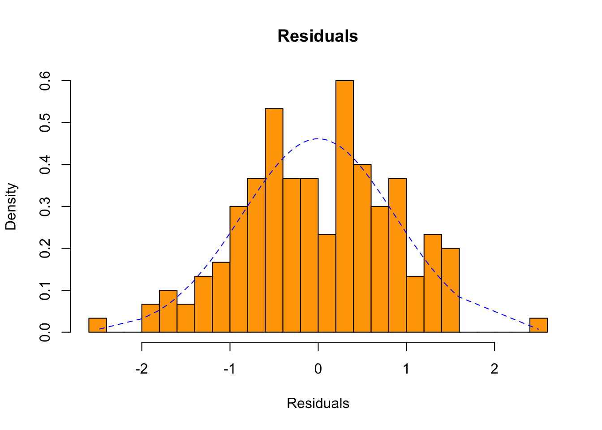
Interesting: from the last histogram, would you say that the residuals in this linear model are normally distributed?
Further Readings
R Markdown
R Markdown is what I have used to produce this beautiful Notebook. We will learn more about it near the end of the course, but if you already feel ready to dive deep, here’s a book: R Markdown: The Definitive Guide, Yihui Xie, J. J. Allaire, Garrett Grolemunds.
License: GPLv3 This Notebook is free software: you can redistribute it and/or modify it under the terms of the GNU General Public License as published by the Free Software Foundation, either version 3 of the License, or (at your option) any later version. This Notebook is distributed in the hope that it will be useful, but WITHOUT ANY WARRANTY; without even the implied warranty of MERCHANTABILITY or FITNESS FOR A PARTICULAR PURPOSE. See the GNU General Public License for more details. You should have received a copy of the GNU General Public License along with this Notebook. If not, see http://www.gnu.org/licenses/.

Contact: goran.milovanovic@datakolektiv.com

Impressum
Data Kolektiv, 2004, Belgrade.